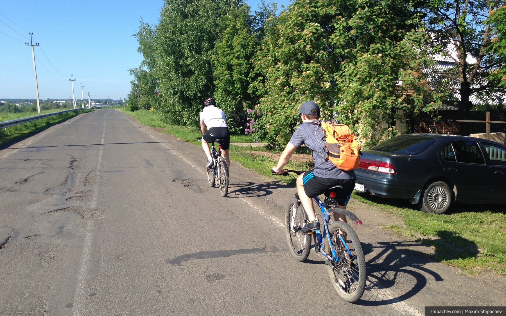
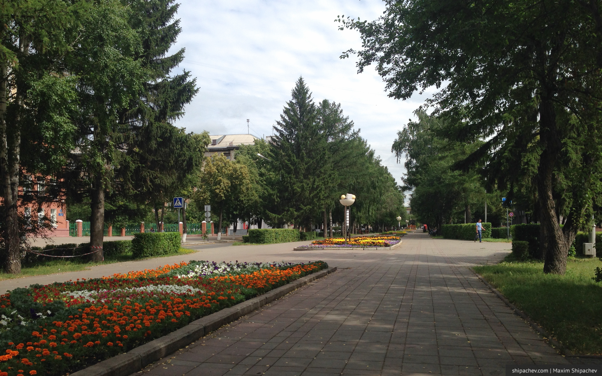
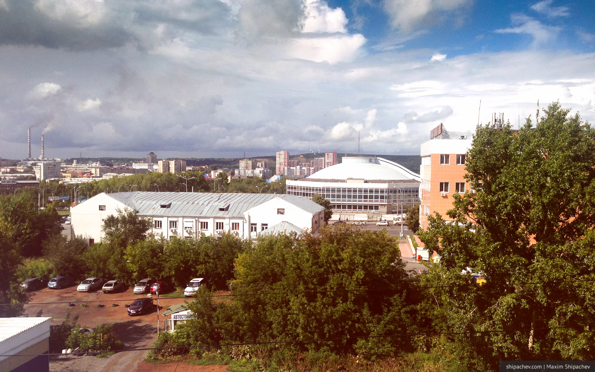
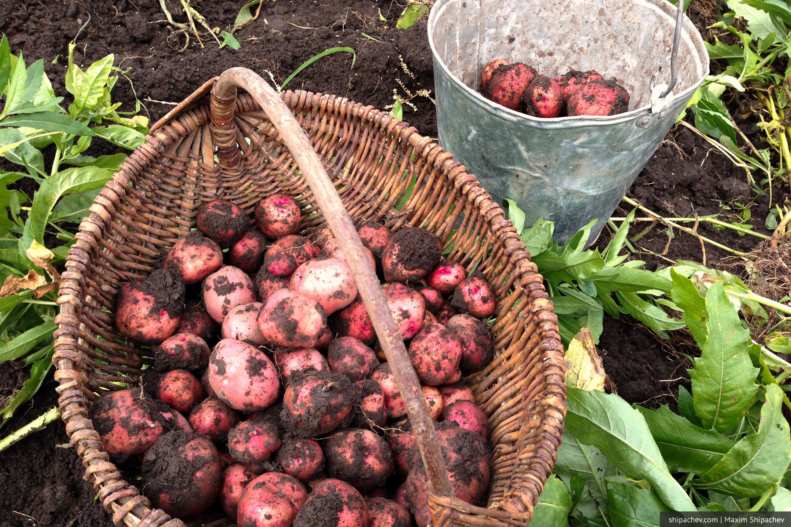
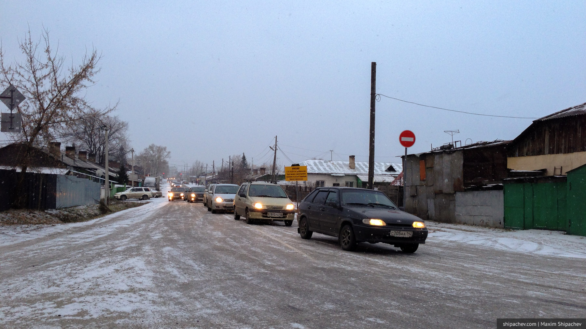
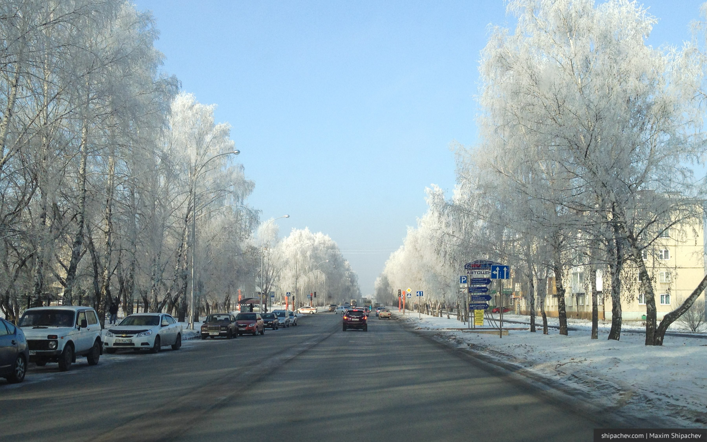
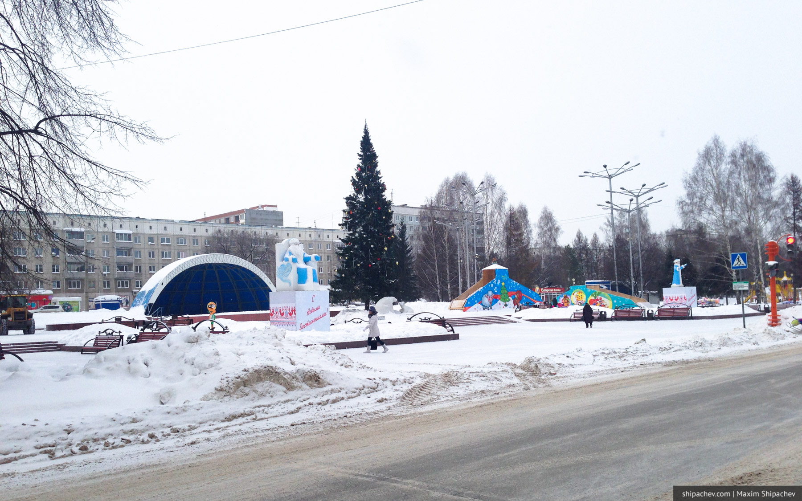

Ещё с уроков географии в школе я запомнил, что Кемерово находится в зоне с резко-континентальным климатом. Поэтому у нас огромные перепады температур в течение года и сухой воздух.
Когда люди самостоятельно выбирают где им жить, они часто учитывают погоду. Насколько комфортна она для проживания. Понятие комфорта для каждого различно. Кто-то считает, что, к примеру, в Петербурге климат не тот, а кому-то, напротив, нужна его сырость.
Однажды в мае я решил доверять не чувствам, а статистике, и подсчитать сколько дней в течение года будут комфортны именно для меня.
2016
Май
??????
???????????
| 14 ? +3° шквальный ветер 15 ? +5° холодно 16 ? +8° 17 ? +10° 18 ? +9° снег с дождём 19 ? +12° | 20 ? +16° 21 ? +18° 22 ? +20° 23 ? +22° 24 ? +22° 25 ? +23° | 26 ? +22° 27 ? +23° 28 ? +8° 29 ? +11° 30 ? +18° 31 ? +12°, дождь |
Июнь

????
??????????????????????????
| 1 ? +17°, ветер 2 ? +12° 3 ? +17° 4 ? +22° 5 ? +29° 6 ? +25° 7 ? +27° 8 ? +28° 9 ? +28° 10 ? +32° | 11 ? +32° 12 ? +34° 13 ? +34° 14 ? +25° 15 ? +23° 16 ? +26° 17 ? +25° 18 ? +22° 19 ? +23° 20 ? +18° | 21 ? +24° 22 ? +26° 23 ? +28° 24 ? +24° 25 ? +26° 26 ? +28° 27 ? +30° 28 ? +26° 29 ? +28° 30 ? +28° |
Июль

???????????????????????????????
| 1 ? +30° 2 ? +28° 3 ? +20° 4 ? +23° 5 ? +24° 6 ? +27° 7 ? +25° 8 ? +26° 9 ? +28° 10 ? +27° | 11 ? +26° 12 ? +27° 13 ? +27° 14 ? +31° 15 ? +32° 16 ? +22° 17 ? +20° 18 ? +24° 19 ? +21° 20 ? +23° | 21 ? +25° 22 ? +27° 23 ? +26° 24 ? +22° 25 ? +23° 26 ? +26° 27 ? +20° 28 ? +24° 29 ? +24° 30 ? +22° 31 ? +19° |
Август

?
?????????
| 1 ? +21° 2 ? +22° 3 ? +23° 4 ? +24° 5 ? +27° 6 ? +27° 7 ? +30° 8 ? +22° 9 ? 10 ? | 11 ? 12 ? 13 ? 14 ? 15 ? 16 ? 17 ? 18 ? 19 ? 20 ? | 21 ? 22 ? 23 ? 24 ? 25 ? 26 ? 27 ? 28 ? 29 ? 30 ? +22° 31 ? +16° |
Сентябрь

??????????????????????????????
| 1 ? +16° 2 ? +18° 3 ? +20° 4 ? +21° 5 ? +22° 6 ? +21° 7 ? +24° 8 ? +25° 9 ? +27° 10 ? +19° | 11 ? +21° 12 ? +21° 13 ? +20° 14 ? +16° 15 ? +18° 16 ? +20° 17 ? +21° 18 ? +21° 19 ? +22° 20 ? +22° | 21 ? +21° 22 ? +16° 23 ? +15° 24 ? +18° 25 ? +17° 26 ? +13° 27 ? +14° 28 ? +15° 29 ? +12° 30 ? +9° |
Октябрь

????????????????
???????????????
| 1 ? +7° 2 ? +6° 3 ? +6° 4 ? +6° 5 ? +4° 6 ? +1° 7 ? +3° 8 ? 0° 9 ? +1° 10 ? +2° | 11 ? +1° 12 ? +1° 13 ? 0° 14 ? +1° 15 ? -1° 16 ? -2° 17 ? -1° 18 ? -1° 19 ? -1° 20 ? -1° | 21 ? -4° 22 ? -4° 23 ? -3° 24 ? -4° 25 ? -7° 26 ? -5° 27 ? -1° 28 ? -3° 29 ? -3° 30 ? -5° 31 ? -4° |
Ноябрь

????????????
???????????????
| 1 ? -1° 2 ? -2° 3 ? -4° 4 ? -3° 5 ? -5° 6 ? -7° 7 ? -3° 8 ? -3° 9 ? -7° 10 ? -13° | 11 ? -12° 12 ? -12° 13 ? -15° 14 ? -13° 15 ? -16° 16 ? -22° 17 ? -22° 18 ? -28° 19 ? -30° 20 ? -29° | 21 ? -27° 22 ? -18° 23 ? -17° 24 ? -10° 25 ? -8° 26 ? -4° 27 ? -3° 28 ? -3° 29 ? -1° 30 ? 0° |
Декабрь

??????????????????????
?????????
| 1 ? -1° 2 ? -6° 3 ? -3° 4 ? -1° 5 ? -4° 6 ? -3° 7 ? -7° 8 ? -6° 9 ? -1° 10 ? -15° | 11 ? -11° 12 ? -4° 13 ? -4° 14 ? +2° 15 ? +3° 16 ? -7° 17 ? -10° 18 ? -13° 19 ? -11° 20 ? -7° | 21 ? -5° 22 ? -27° 23 ? -27° 24 ? -28° 25 ? -8° 25 ? -11° 26 ? -10° 27 ? -6° 28 ? -7° 29 ? -10° 30 ? -8° 31 ? -7° |
2017
Январь
??????????????????????????????
?
| 1 ? -7° 2 ? -5° 3 ? -5° 4 ? -6° 5 ? -8° 6 ? -12° 7 ? -18° 8 ? -9° 9 ? -8° 10 ? -15° | 11 ? -8° 12 ? -7° 13 ? -15° 14 ? -17° 15 ? -20° 16 ? -27° 17 ? -23° 18 ? -17° 19 ? -16° 20 ? -17° | 21 ? -7° 22 ? -5° 23 ? -3° 24 ? -5° 25 ? -7° 26 ? -10° 27 ? -25° 28 ? -29° 29 ? -27° 30 ? -18° 31 ? -15° |
Февраль
?????????????
????????????
| 1 ? -13° 2 ? -9° 3 ? -11° 4 ? -4° 5 ? -13° 6 ? -14° 7 ? -14° 8 ? -6° 9 ? -6° | 10 ? -13° 11 ? -20° 12 ? -30° 13 ? -30° 14 ? -22° 15 ? -23° 16 ? -17° 17 ? -8° 18 ? -12° 19 ? -16° 20 ? -13° | 21 ? 0° 22 ? 0° 23 ? 0° 24 ? -2° 25 ? -1° 26 ? 0° 27 ? 1° 28 ? 3° |
Март
?????????????????????
???????????
| 1 ? +3° 2 ? +2° 3 ? +1° 4 ? +2° 5 ? +2° 6 ? +1° 7 ? +2° 8 ? +1° 9 ? +1° 10 ? +1° | 11 ? +0° 12 ? +2° 13 ? +1° 14 ? 0° 15 ? -3° 16 ? -5° 17 ? -7° 18 ? -6° 19 ? -5° 20 ? -5° | 21 ? +2° 22 ? +4° 23 ? +4° 24 ? +5° 25 ? +7° 26 ? +5° 27 ? +5° 28 ? +5° 29 ? +10° 30 ? +10° 31 ? +10° |
Апрель
????????????????
???????????????
| 1 ? -1° 2 ? -8° 3 ? -2° 4 ? -1° 5 ? -1° 6 ? 0° 7 ? +2° 8 ? +9° 9 ? +8° 10 ? +9° | 11 ? +16° 12 ? +15° 13 ? +17° 14 ? +16° 15 ? +15° 16 ? +8° 17 ? +2° 18 ? +1° 19 ? +15° 20 ? +6° | 21 ? +7° 22 ? +16° 23 ? +6° 24 ? +15° 25 ? +17° 26 ? +22° 27 ? +24° 28 ? +18° 29 ? +12° 30 ? +7° |
Май
?????
??????
| 1 ? 0° 2 ? +2° 3 ? 0° 4 ? +15° 5 ? +23° 6 ? +25° 7 ? +11° 8 ? +2° 9 ? +10° 10 ? +16° | 11 ? +20° 12 ? +16° 13 ? +18° |